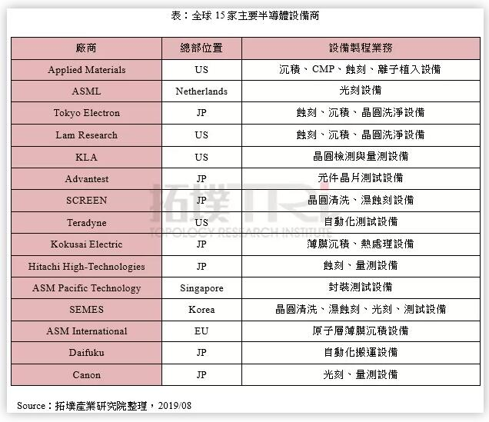
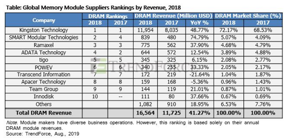
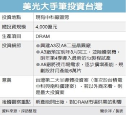
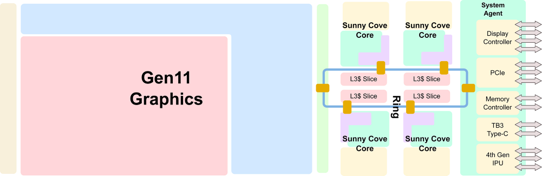

Breaking News
—Trade Conflict between Japan and South Korea–
1. Japan’s Ministry Approves Shipments of Industrial Chemicals to South Korea (ANANDTECH 08-09)
Amidst the ongoing trade conflict between Japan and South Korea, there is some good news to close the week out. The Japanese Ministry of Economy, Trade and Industry has approved a new shipment of industrial chemicals to South Korea, which the latter country’s high-tech manufacturers rely on for the ongoing production of processors and other components. This is the first of shipment to be approved since early July, when a diplomatic conflict between the two countries broke out. If South Korean manufacturers get the materials on time, it will help to avoid a painful disruption in the manufacturing and shipping of various tech components, including DRAM, NAND flash, LSI chips, and display panels.
…………
2. Samsung secures key chip supply in Belgium as Tokyo curbs exports (Nikkei 08-10)
Samsung Electronics is now sourcing a crucial chipmaking chemical from Belgium as Japan’s restrictions on exports to South Korea leave the conglomerate facing a “crisis,” a source has told the Nikkei Asian Review.
…………
Park Jae-keun, a professor of semiconductor engineering at Hanyang University, says that Samsung is sourcing extreme ultraviolet photoresist from a Belgium-based company. According to Park, Samsung has bought six to 10 months’ worth of the chemical, which is used to deposit circuit patterns onto silicon wafers in a cutting-edge chipmaking process.
…………
3. South Korea to drop Japan from its fast-track trade ‘white list’( Reuters 08-12)
South Korea said on Monday it plans to drop Japan from its “white list” of countries with fast-track trade status from September, a tit-for-tat move that deepens a diplomatic and trade rift between the two countries.
…………
The Japanese government did not immediately issue a public response to Monday’s announcement, but a senior foreign ministry official told broadcaster NHK that a response would come after more analysis of the details of South Korea’s decision.
…………
4.受管制原料出口韩国冲击，日商启动中国工厂生产计划 (TechNews科技新报 08-12)
根据《日本经济新闻》的报导指出，就在日本管制3种高科技原料出口韩国，甚至进一步将韩国移出出口简化程序白名单之后，日本的相关原料生产厂商也受到了影响。因此，专门以生产高纯度氟化氢等原料为主的日本森田化学表示，未来预计将启动在中国生产高纯度氟化氢的计划，以供应韩国厂商的需求。
根据《日本经济新闻》专访森田化学时，森田化学社长森田康夫指出，因为日本政府对韩国管制高科技原料出口之后，使得日本企业在全球市场的市占率将会因此下降。所以，森田化学将在中国工厂启动高纯度氟化氢生产，以向韩国厂商进行供货。
…………
5.日本据报再次批准对韩出口半导体工业材料(新华社 08-20)
多家媒体报道，日本政府再次批准对韩国出口一批半导体工业材料。
韩联社19日以不愿公开姓名的韩国政府和行业人士为消息源报道，日本政府批准一家日本制造商向韩国三星电子有限公司出口光刻胶，出口量是三星电子大约6个月的使用量。
截至19日，日本政府和三星电子没有回应这一报道。
这是日方7月对韩方采取出口管制后第二次批准出口光刻胶。日本政府本月8日说，已经发放日企出口的个别许可；共同社当时以消息人士为来源报道，许可所涉出口产品是光刻胶。
一名行业人士19日告诉韩联社记者，日方再次批准出口光刻胶是“好消息”，但没有打消韩方忧虑，因为日方迄今没有批准对韩方出口另外两种半导体工业材料。
韩国总统府青瓦台一名官员20日向路透社证实日方批准出口的消息，同时说“不确定性”将持续，直至日方彻底撤销出口管制。
…………
Market Trends
1. 2Q19 DRAM Revenue Falls by 9.1% QoQ, with 3Q19 Quotes Still Set to Fall, Says TrendForce（TrendForce 08-08）
According to investigations by DRAMeXchange, quote trends for various products, including commodity DRAM, server DRAM and consumer DRAM, fell by nearly 30%, with the exception of discrete mobile DRAM/ eMCP products, whose declines fell within the 10 -20% range. Server DRAM prices suffered the steepest fall, registering a near-35% decline. Observing the market, we see that although 2Q sales bit grew over the previous quarter, quotes kept on falling, causing total DRAM revenue to fall by 9.1% QoQ in 2Q.
Although the Japan-South Korea incident over material exports at the beginning of July caused prices to bounce in the spot market, the scale of the spot market is too small to effectively clear the large inventory levels held by suppliers in 3Q looking forward. Furthermore, end demand was weak, and contract prices kept on falling in July. Judging from the prices set by first-tier PC-OEMs, ASP for mainstream 8GB modules have already fallen to US$25.5, which is a near-20% QoQ fall from US$31.5 in the previous quarter, and a MoM fall of around 10% from US$28.5 in the previous month.
2.继半导体材料后，光刻机相关设备市场或受日韩贸易战影响 (拓墣产业研究院 08-19)
…………
从全球半导体设备厂的总部位置来看，*日本厂商占7间、美国厂商4间、欧洲厂商**2**间、新加坡与韩国各1间。由于美国与日本厂商为供应链主要玩家，面对话题性不断升温的中美贸易战，以及近日突发的日韩贸易关系恶化，也让半导体设备供需状况，或将成为继半导体材料后市场讨论的议题。
…………
总体来说，半导体晶圆制造的主要设备技术供应商以美国与日本为主，高集中度的产业聚落也意味着容易受各国在贸易与进出口政策上的变动而影响产业状况，例如中美贸易战与近期的日韩关系恶化，均为半导体产业添加不稳定因子，也持续考验供应商对大环境的应变能力与经营策略。
…………
值得一提的是，荷兰商ASML的光刻机是晶圆制造中相当重要且必须的设备，而ASML的光阻剂布植设备就是与日商TEL合作，晶圆做完光阻剂布植后会直接传送进做曝光显影制程空间，因此ASML某些机型的光刻机，原则上是与TEL机台联结在一起，装机与调机期间也是同时进行，倘若TLE机台出口因审核而影响交机时间，连带也会影响光刻机建置，对于韩国积极投资扩大半导体产业带来潜在的风险评估***，后续影响程度仍需重点观察。

3.Top Ten DRAM Module Suppliers by Revenue, Which Grew by Over 40% YoY in 2018 (TrendForce 08-21)
According to the latest global DRAM module supplier rankings by DRAMeXchange, a division of TrendForce, although DRAM prices took a downturn in 2H18, ASP for the whole year came above 10% in 2017. Along with the increase in shipments, this put total revenue for the global module market 2018 at US$16.6 billion, a 41% increase YoY.
Looking back at price trends in 2018, TrendForce points out that spot prices remained high in 1H19, even surpassing contract prices by over 20%, and thus generated plenty of revenue and profit for module manufacturers. Despite end demand’s being dragged down by the overall situation in 2H19, clients’ increasing inventory levels and the subsequent dive in DRAM prices, most module manufacturers still sailed through violently fluctuating prices with proper management. Thus although the baseline revenue was already set quite high in 2017, module manufacturers still enjoyed an above-40% revenue growth in 2018.

Vendor News
1. 紫光在重庆建新存储芯片基地 预计2021年建成投产(两江新区官网 2019-08-28)
…………
根据协议，紫光集团将在重庆两江新区发起设立紫光国芯集成电路股份有限公司和重庆紫光集成电路产业基金，建设包括DRAM总部研发中心在内的紫光DRAM事业群总部DRAM存储芯片制造工厂、紫光科技园等。据了解，DRAM存储芯片制造工厂计划于2019年底开工建设，预计**2021年建成投产。***
…………
按照此次签署的协议，紫光国芯集成电路股份有限公司将作为紫光集团已经和未来在各地设立的存储芯片制造工厂的投资主体，打造世界级存储芯片领域核心产业集团。
紫光重庆存储芯片工厂则依靠紫光集团在存储器领域积累的从设计、生产、测试、方案构建到全球量产销售等研发和产业化经验，主要专注12英寸DRAM存储芯片的制造。该工厂计划于2019年底开工建设，预计2021年建成投产。
值得一提的是，紫光集团DRAM总部研发中心同样落户两江新区。紫光集团DRAM事业群已于今年6月底组建成立。在芯片工厂建成前，紫光集团先期在现有芯片工厂内设立产品中试生产线，进行产品生产工艺技术研发，待工艺成熟后在紫光重庆芯片工厂量产。
…………
2.第二季度业绩显著回暖 兆易创新上半年营收小幅增长(全球半导体观察 2019-08-27)
8月27日，兆易创新发布其2019年上半年业绩报告。
公告表示，尽管受到中美贸易摩擦、宏观经济增速放缓等因素影响，公司经营业绩自第二季度显著回暖，第二季度单季实现收入7.45 亿元，同比增长31.98%；第二季度实现归属于上市公司股东的净利润1.47亿元，同比增长1.19%。
综合2019 年上半年，兆易创新实现营业收入12.02亿元，同比增长8.63%。净利润方面，兆易创新表示，由于研发费用大幅增长等原因2019年上半年归属于上市公司股东的净利润1.87亿元，同比下降20.24%。
…………
兆易创新还提及，公司继续推进与合肥产投合作的12英寸晶圆存储器研发项目2019年4月26日，兆易创新与合肥产投、合肥长鑫集成电路有限责任公司签署《可转股债权投资协议》，约定以可转股债权方式投资3亿元，并继续研究商讨后续出资方案。
3.Micron: Mass Production of 16 Gb DDR4 & LPDDR4X Chips Using 1z nm Technology (ANADTECH 2019-08-16)
aMicron announced on Thursday that it had started volume production of memory chips using its 3rd Generation 10 nm-class fabrication technology (also known as 1Z nm). The first DRAMs to be made using Micron’s 1Z nm process are 16 Gb monolithic DDR4 and LPDDR4X devices, with Micron expected to broaden their portfolio over time.
Micron’s 3rd Generation 10 nm-class (1Z nm) manufacturing process for DRAM will allow the company to increase the bit density, enhance the performance, and the lower power consumption of its DRAM chips as compared to its 2nd Generation 10 nm-class (1Y nm) technology. In particular, the company says that its 16 Gb DDR4 device consumes 40% less power than two 8 Gb DDR4 DRAMs (presumably at the same clocks). Meanwhile, Micron’s 16 Gb LPDDR4X ICs will bring an up to 10% power saving. Because of the higher bit density that the new 1Z nm technology provides, it will be cheaper for Micron to produce high-capacity (e.g., 16 Gb) memory chips for lower-cost, high-capacity memory sub-systems
.…………
4.美光在台扩厂 加码903亿元建两座晶圆厂 (台湾经济日报 2019-08-26)
全球第三大DRAM厂美商美光（Micron）加码投资中国台湾地区，要在现有中科厂区旁兴建两座晶圆厂，总投资额达新台币4,000亿元（约合人民币903亿元），以生产下世代最新制程生产DRAM时值DRAM仍供过于求，美光大手笔投资，震撼业界。
…………
据了解，美光此次903亿元扩建案，规划在目前中科厂旁，兴建A3及A5两座晶圆厂。其中A3厂预定明年8月完工，并陆续装机，明年第4季导入最新的1z制程试产，藉此缩小与龙头三星的差距；第二期A5厂将视市场需求，逐步扩增产能，规划设计月产能6万片。
美光台湾分公司证实在台中扩建A3厂，且已进入兴建工程。美光台湾强调，A3厂房是以扩建无尘室为主，将加入既有的桃园前段晶圆厂，以及台中后里前段晶圆厂的前段晶圆制造生产线， 进一步扩充美光在台设立的DRAM卓越中心的设备更新、技术升级。至于A3厂投资金额和A5厂相关产能规划等细节，则不便透露。
…………

5. SK Hynix Develops World’s Fastest High Bandwidth Memory, HBM2E (SK Hynix 08-12)
SK Hynix Inc. (or ‘the Company,’ www.skhynix.com) announced today that it has developed HBM2E DRAM product with the industry’s highest bandwidth. The new HBM2E boasts approximately 50% higher bandwidth and 100% additional capacity compared to the previous HBM2.
SK Hynix’s *HBM2E supports over 460GB (Gigabyte) per second bandwidth based on the 3.6Gbps (gigabits-per-second) speed performance per pin with 1,024 data I/**Os (Inputs/Outputs). Through utilization of the TSV (Through Silicon Via) technology, a maximum of eight 16-gigabit chips are vertically stacked, forming a single, dense package of 16GB data capacity.***
SK Hynix’s HBM2E is an optimal memory solution for the fourth Industrial Era, supporting high-end GPU, supercomputers, machine learning, and artificial intelligence systems that require the maximum level of memory performance. Unlike commodity DRAM products which take on module package forms and mounted on system boards, HBM chip is interconnected closely to processors such as GPUs and logic chips, distanced only a few ㎛ units apart, which allows even faster data transfer.
New Technology
1. 颠覆你的常识，这内存上面混搭了四个厂家的颗粒(超能网 08-06)
有时候同一品牌的同一型号内存，如果买到不同批次的话有可能它们用的颗粒会是不一样的，这其实也很正常，毕竟内存制造厂会向不同颗粒生产厂购买原料，当这一批颗粒用完之后就有可能会更换成别的，然而一根内存上同时使用不同厂家的颗粒你见过没？日本内存制造商Century Micro就弄了出来。
这根内存上同时使用了南亚、美光、三星和SK海力士的内存颗粒，Century Micro表示这不是技术展示品而是正式的产品，PC Watch访问了他们，之所以弄出这种内存出来，是因为客户有这种需求，客户最初下单时是使用一种闪存颗粒，然而后续又订了另一种别的厂家的颗粒，一般来说同一条内存上用两种颗粒会出现问题，所以就要分批次生产，不过有了Century Micro的新技术之后只要内存颗粒的规格是一样的，即使来自不同厂家也可以正常工作，原文上还有个视频就是展示他们这种装有四种颗粒的内存是可以稳定工作的。
2.中科院微电子所副总工程师赵超：嵌入式MRAM大规模量产成定局 (中国电子报 08-09)
…………
型存储器，特别是嵌入式MRAM在逻辑芯片的应用，是近期的亮点。MRAM，即Magnetic Random Access Memory，是一种非易失性(Non-Volatile)的磁性随机存储器。它拥有静态随机存储器(SRAM)的高速读取写入能力，以及动态随机存储器(DRAM)的高集成度，而且基本上可以无限次地重复写入。
“嵌入式MRAM的大规模量产已成定局。除了替代嵌入式闪存DRAM还会取代一部分SRAM。这种替代，不仅在‘先进技术代’，而且在‘大尺寸技术代’也会发生。国内的逻辑代工企业再不跟上步伐，可能要犯历史性错误。”赵超说。
…………
3.Ice Lake架构深度解析 Intel的雅典娜女神 (超能网08-10)
Ice Lake是Intel下一代平台的架构代号，随着台北电脑展上的演示，它终于揭下来神秘的面纱。而前不久Intel内部的第二季度财报会议上，CEO已经宣布Ice Lake处理器已经正式向OEM厂商出货，戴尔方面也迅速行动，延期了一个月多的、采用新Ice
Lake处理器的XPS
13 7390也迅速上架接受预定并将于近日发货。这意味着Intel的第一代量产级10nm产品（不算Cannon Lake唯一的那款10nm i3终于要在市场上亮相了，在此之际，小编编译、整理了目前有关于Ice
Lake架构的相关解析文章，探寻其背后的改进之处。
